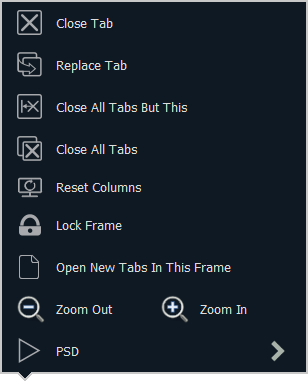

Tab Tools
Every frame has a tab tools menu in the lower left corner of the frame. Selecting this menu icon will open the tab tools menu, which provides options for opening and closing tabs in that frame.

You can left click with a mouse or double tap a tab in focus to also see this menu.
The following is a list of menu options. Not all options are available for every tab.
- Close Tab - closes the selected tab.
- Replace Tab - allows you to close the current tab and choose from the Home Screen which display to replace it with. Pressing escape will return you to the previously selected tab.
- Close All Tabs But This - closes all of the tabs except the selected one.
- Close All Tabs - closes all of the tabs including the selected one.
- Reset Columns - resets all of the column widths in the selected tab to Eos defaults. This option will only be available for displays with columns.
- Lock Frame - prevents any additional tabs from being opened in the selected frame.
- Open New Tabs In This Frame - specifies that any new tabs opened will automatically open in the specified frame. Only one frame can have this option selected at a time.
- Zoom Out and Zoom In - zooms the selected tab.
Note: If the selected display has a configuration menu, it can be accessed from the tab tools menu.